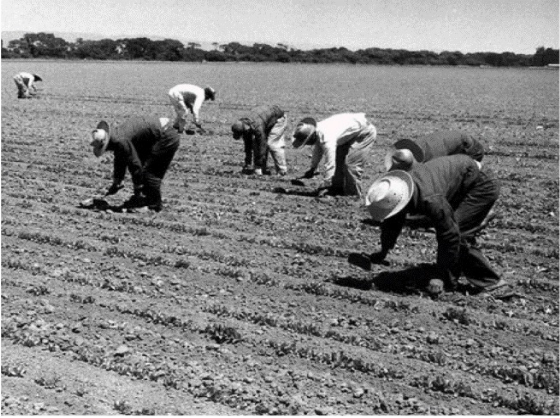

When Mexicans arrived at the border, they had to go through health inspections and delousing, which most the time were in dehumanizing conditions. Afterwards they were sent off in either trains, pick up trucks, or even a cattle car in some areas. Due to the multiple areas, different people had different experiences in terms of housing in the program. Some Mexican men were expected to live in chicken coops, or barns, while others lived in subpar apartments or other lackluster housing. Most worked in day-long sloop labor that was physically taxing. Growers would have them use a shorthand hoe for accuracy even though the farm workers would complain about how painful it was for their back. Growers took advantage of the “local prevailing wage clause” and would short the workers checks, and even come up with charges so they would owe the growers money. Growers were able to get away with this because they held the possibility of deportation over the Braceros’ heads. The program ended being renewed does not end until 1964, this is because the profit on Mexican workers was much higher compared to using American workers because of how easy it was to exploit them. This led to growers pushing for Mexicans who didn’t qualify for the program, such as women and the elderly, to come with or without documentation leading to operations such as “Operation Wetback” which was meant to get people without documentation out or at least give them the documents they needed. The Bracero Program ended up bringing five million Mexican men all across the United States in the twenty-two years it ran. The railroad portion only lasts until 1945 with roughly 106,000 workers in that field.”